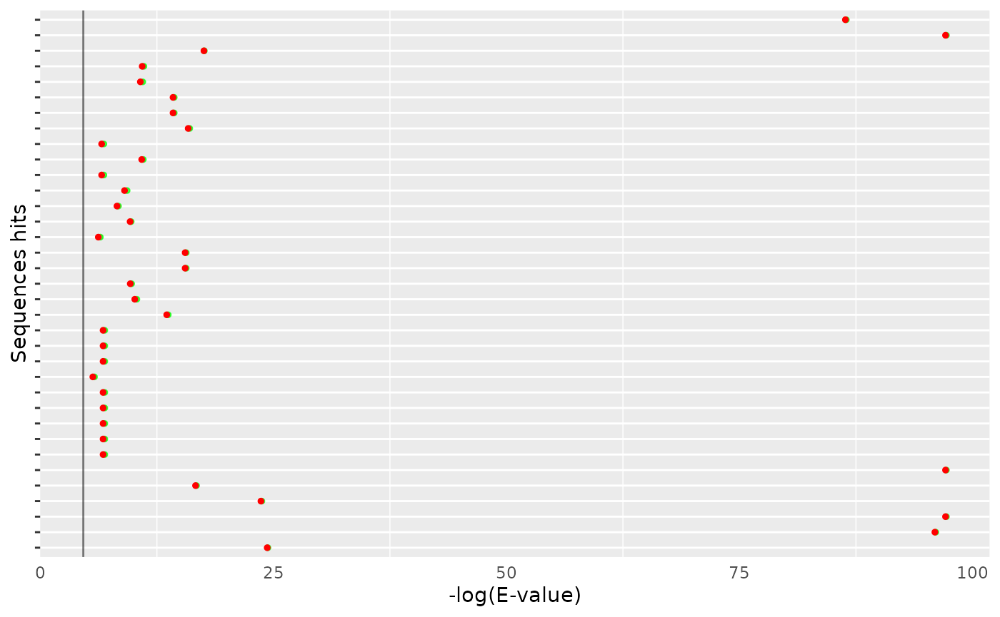
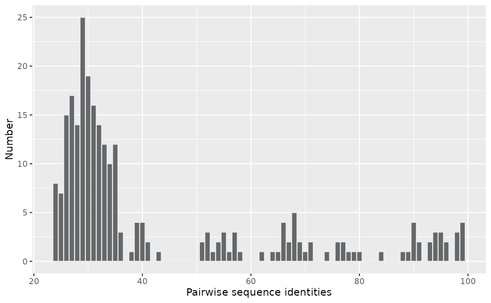
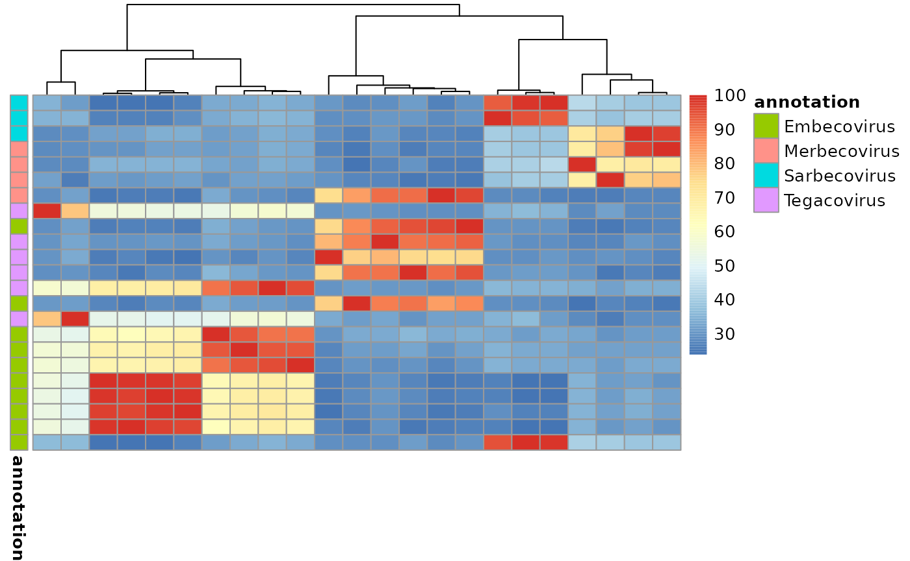
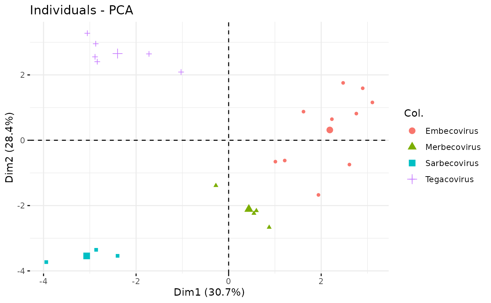

Introduction to HMMERutils: using PHMMER with the Sars-CoV-2 Reference Proteome
Francisco de Borja Campuzano Jiménez
Universidad de Granadacampuzanocurro@gmail.com
María Coral del Val Muñoz
Universidad de Granadadelval@ugr.es
26 abril 2022
Source:vignettes/HMMERutils.Rmd
HMMERutils.RmdBasics
Install HMMERutils
R is an open-source statistical environment which can be easily modified to enhance its functionality via packages. HMMERutils is a R package available via the Bioconductor repository for packages. R can be installed on any operating system from CRAN after which you can install HMMERutils by using the following commands in your R session:
if (!requireNamespace("BiocManager", quietly = TRUE)) {
install.packages("BiocManager")
}
BiocManager::install("HMMERutils")
## Check that you have a valid Bioconductor installation
BiocManager::valid()Required knowledge
HMMERutils is based on many other packages and in particular those that have implemented the infrastructure necessary to deal with protein sequence data and generate r AnnotatedDataFrames. Therefore, note that the Biostrings libraries are used to read, write and handle protein sequences and Biobase is used to generate the annotated DataFrames that the user works with. The content of the r AnnotatedDataFrames have been designed for this purpose.
Asking for help
As package developers, we try to explain clearly how to use our packages and in which order to use the functions. But R and Bioconductor have a steep learning curve so it is critical to learn where to ask for help. The blog post quoted above mentions some but we would like to highlight the Bioconductor support site as the main resource for getting help: remember to use the HMMERutils tag and check the older posts. Other alternatives are available such as creating GitHub issues and tweeting. However, please note that if you want to receive help you should adhere to the posting guidelines. It is particularly critical that you provide a small reproducible example and your session information so package developers can track down the source of the error.
Citing HMMERutils
We hope that HMMERutils will be useful for your research. Please use the following information to cite the package and the overall approach. Thank you!
## Citation info
citation("HMMERutils")
#>
#> currocam (2022). _Manual HMMERutils_. doi: 10.18129/B9.bioc.HMMERutils
#> (URL: https://doi.org/10.18129/B9.bioc.HMMERutils),
#> https://github.com/currocam/HMMERutils/HMMERutils - R package version
#> 0.99.0, <URL: http://www.bioconductor.org/packages/HMMERutils>.
#>
#> currocam (2022). "Article HMMERutils." _bioRxiv_. doi: 10.1101/TODO
#> (URL: https://doi.org/10.1101/TODO), <URL:
#> https://www.biorxiv.org/content/10.1101/TODO>.
#>
#> To see these entries in BibTeX format, use 'print(<citation>,
#> bibtex=TRUE)', 'toBibtex(.)', or set
#> 'options(citation.bibtex.max=999)'.Quick start to using to HMMERutils
The objective of this article is to show the main functionalities of the utilsHMMER library using a case study. We will search for homologous sequences for the whole SARS-CoV-2 reference proteome.
Download the SARS-CoV-2 reference proteome
First, let’s download the reference proteome for the Sars_CoV-2. To do this, we are going to save the url in a variable. We use the paste0 function only to improve readability. Then we will read the compressed file directly from UniProt with the readAAStringSet function from the Biostrings library.
url.refProteomes <- paste0("https://ftp.uniprot.org/pub/databases/uniprot/",
"current_release/knowledgebase/reference_proteomes/",
"Viruses/UP000000354/UP000000354_694009.fasta.gz")
sars.cov.fasta <- readAAStringSet(url.refProteomes)Preprocess sequences and select case studies
Now, we have an AAStringSet stored in the variable sars.cov.fasta and we can access the sequences it contains using the $ operator and the sequence header. However, headers usually contain, as in this case, a lot of information that is not useful right now such as descriptions. HMMERutils has a very convenient function for this purpose which is parse. Note that we use the name function to access the sequence names and the %>% operator to pass the result of one function/argument to the other in sequence
new.headers <- sars.cov.fasta %>%
names() %>%
parse_FASTA_sequence_identifiers()
new.headers
#> [1] "R1A_SARS" "R1AB_SARS" "SPIKE_SARS" "NCAP_SARS" "VME1_SARS"
#> [6] "AP3A_SARS" "NS3B_SARS" "NS6_SARS" "NS7A_SARS" "ORF9B_SARS"
#> [11] "VEMP_SARS" "NS8A_SARS" "NS7B_SARS" "Y14_SARS" "NS8B_SARS"Now, we can assign these new headers to the AAStringSet:
names(sars.cov.fasta) <- new.headersWe can take a look at the contents of the fasta file by “showing” it:
sars.cov.fasta
#> AAStringSet object of length 15:
#> width seq names
#> [1] 4382 MESLVLGVNEKTHVQLSLPVLQV...DQLREPLMQSADASTFLNGFAV R1A_SARS
#> [2] 7073 MESLVLGVNEKTHVQLSLPVLQV...KGRLIIRENNRVVVSSDILVNN R1AB_SARS
#> [3] 1255 MFIFLLFLTLTSGSDLDRCTTFD...SCCKFDEDDSEPVLKGVKLHYT SPIKE_SARS
#> [4] 422 MSDNGPQSNQRSAPRITFGGPTD...MDDFSRQLQNSMSGASADSTQA NCAP_SARS
#> [5] 221 MADNGTITVEELKQLLEQWNLVI...IGNYKLNTDHAGSNDNIALLVQ VME1_SARS
#> ... ... ...
#> [11] 76 MYSFVSEETGTLIVNSVLLFLAF...TVYVYSRVKNLNSSEGVPDLLV VEMP_SARS
#> [12] 39 MKLLIVLTCISLCSCICTVVQRCASNKPHVLEDPCKVQH NS8A_SARS
#> [13] 44 MNELTLIDFYLCFLAFLLFLVLIMLIIFWFSLEIQDLEEPCTKV NS7B_SARS
#> [14] 70 MLPPCYNFLKEQHCQKASTQREA...VGEILLLEWLAEVVKLPSRYCC Y14_SARS
#> [15] 84 MCLKILVRYNTRGNTYSTAWLCA...LHEGHQTAAFRDVLVVLNKRTN NS8B_SARSNow, we are going to select a series of proteins that are of interest to us for this case study:
VEMP_SARS <- sars.cov.fasta$VEMP_SARS #Envelope small membrane protein
NS8A_SARS <- sars.cov.fasta$NS8A_SARS #ORF8a protein
NS8B_SARS <- sars.cov.fasta$NS8B_SARS #ORF8b protein
NS7B_SARS <- sars.cov.fasta$NS7B_SARS #Protein non-structural 7b
Y14_SARS <- sars.cov.fasta$Y14_SARS #Uncharacterized proteinAll these proteins have in common to be small in size (it will speed up some computational times) and represent different possibilities: we have from membrane proteins (which we would expect to show homology with other membrane proteins), proteins similar to each other (NS8A_SARS and NS8B_SARS), non-structural proteins and uncharacterized proteins.
Proteins homologous to VEMP_SARS
Before exemplifying how to use HMMERutils to perform several searches simultaneously (usually against several databases) or to use other algorithms, let’s perform a basic search against a single database using phmmer, the default algorithm.
Post request to HMMER server
Now, we can start posting requests to HMMER through its API, using the search family of functions. Let’s start with an example: let’s search for proteins homologous to VEMP_SARS (a envelope small membrane protein) against the Swissprot database. Notice that we have indicated as sequence the AAString we defined before (although it could also be a character) and we have given the parameter verbose = FALSE, indicating that we do not want the progress of the search to be printed because it would take too much space in this document.
HMMER_data_tbl <- search_phmmer(
seqs = VEMP_SARS,
dbs = "swissprot",
verbose = FALSE)AnnotatedDataFrame returned by “search” function family
Let’s inspect the content of the new variable we have created:
HMMER_data_tbl
#> An object of class 'AnnotatedDataFrame'
#> HMMERqueryNames: 1
#> varLabels: dbs uuid ... phylip.url (17 total)
#> varMetadata: labelDescription algorithmAs we can see, this is an AnnotatedDataFrame, an class object of the Biobase library that allows us to store a DataFrame together with its metadata. This is the way in which the search_ family of functions will return the results. We can also see that it has 1 row (since it contains the results of a single search) and 17 variables. Let’s see what these variables and their descriptions are by accessing the metadata using the VarMetadata function or the @ operator.
varMetadata(HMMER_data_tbl)| labelDescription | algorithm | |
|---|---|---|
| dbs | Names of target databases used in the search | phmmer |
| uuid | The unique job identifier | phmmer |
| score.url | URL with HMMER results score | phmmer |
| stats | The stats hash | phmmer |
| hits | Array of sequence hashes | phmmer |
| domains | Array of sequence domains hashes | phmmer |
| text.url | A plain text file containing the hit alignments and scores. | phmmer |
| tab.url | A tab delimited text file containing the hit information. No alignments. | phmmer |
| xml.url | An XML file formatted for machine parsing of the data. | phmmer |
| json.url | All the results information encoded as a single JSON string. | phmmer |
| fasta.url | Download the significant hits from your search as a gzipped FASTA file. | phmmer |
| fullfasta.url | Full length FASTA | phmmer |
| alignedfasta.url | A gzipped file containing the full length sequences for significant search hits. | phmmer |
| stockholm.url | A gzipped file containing aligned significant search hits in FASTA format. | phmmer |
| clustalw.url | Download an alignment of significant hits as a gzipped ClustalW file. | phmmer |
| psiblast.url | Download an alignment of significant hits as a gzipped psiblast file. | phmmer |
| phylip.url | Download an alignment of significant hits as a gzipped phylip file. | phmmer |
As can be seen in the table above, we have different types of variables that may be of interest in VEMP_SARS.homologous.PDB.
Files available for download and urls
On the one hand, we have a series of parameters that refer to our own search (and that in this case are not useful, since we have performed a single search) and that contain a series of urls. Variables starting with “url” contain the download links of all download files that will be available for a limited time on the HMMER web server. Also, in score.url is the web page with the HMMER results (the same one you would get to if you were using the web interface), which you can access to consult the results from there.
The purpose of this library is not to be an intermediary with HMMER web server. However, in case you need to post a large number of searches, it could be used to automate sending the search parameters and return a table with all the links that might be of interest to you!
To display such a table we have several options. The simplest option is to use the tidyverse metalibrary. However, in order to do this we must first separate the AnnotatedDataFrame data from its metadata. To do this, we could use the pData() function or the @ operator. Then, we select only the parameters ending with url using the syntax shown below (which will be useful later as well) and that we transpose the table to make it easier to read in this document.
HMMER_data_tbl@data%>%
select(ends_with("url")) %>%
t()
#pData(VEMP_SARS.homologous.PDB) %>%
# select(ends_with("url")) %>%
# t()As you may have guessed, we can use the readAAStringSet function to, just as we read the Fasta file containing the Sars-CoV-2 Reference Proteome, via a url, we can use it to download and read the HMMER files.
readAAStringSet(HMMER_data_tbl$fullfasta.url)
#> AAStringSet object of length 35:
#> width seq names
#> [1] 76 MYSFVSEETGTLIVNSVLLFLAF...TVYVYSRVKNLNSSEGVPDLLV VEMP_SARS
#> [2] 76 MYSFVSEETGTLIVNSVLLFLAF...TVYVYSRVKNLNSSEGVPDLLV VEMP_BCHK3
#> [3] 76 MYSFVSEETGTLIVNSVLLFLAF...TVYVYSRVKNLNSSEGVPDLLV VEMP_BCRP3
#> [4] 76 MYSFVSEETGTLIVNSVLLFFAF...TVYVYSRVKNLNSSEGVPDLLV VEMP_BC279
#> [5] 75 MYSFVSEETGTLIVNSVLLFLAF...PSFYVYSRVKNLNSSRVPDLLV VEMP_SARS2
#> ... ... ...
#> [31] 84 MFMADAYFADTVWYVGQIIFIVA...RGRQFYEFYNDVKPPVLDVDDV VEMP_CVBOK
#> [32] 84 MFMADAYLADTVWYVGQIIFIVA...RGRQFYEFYNDVKPPVLDVDDV VEMP_CVP67
#> [33] 84 MFMADAYLADTVWYVGQIIFIVA...RGRQFYEFYNDVKPPVLDVDDV VEMP_CVPIA
#> [34] 84 MFMADAYLADTVWYVGQIIFIVA...RGRQFYEFYNDVKPPVLDVDDV VEMP_CVHOC
#> [35] 84 MFMADAYFADTVWYVGQIIFIVA...RGRQFYEFYNDVKPPVLDVDDV VEMP_CVBMLikewise, we could read the alignments of these sequences to the HMM (Hidden Markov Model) generated by HMMER using the function readAAMultipleAlignment and indicating the format:
readAAMultipleAlignment(HMMER_data_tbl$alignedfasta.url)
#> AAMultipleAlignment with 36 rows and 79 columns
#> aln names
#> [1] MYSFVSEETGTLIVNSVLLFLAF.V...VKPTVYVYSRVKNLNSSEGVPDLLV Query
#> [2] MYSFVSEETGTLIVNSVLLFLAF.V...VKPTVYVYSRVKNLNSSEGVPDLLV VEMP_SARS/1-76 [s...
#> [3] MYSFVSEETGTLIVNSVLLFLAF.V...VKPTVYVYSRVKNLNSSEGVPDLLV VEMP_BCHK3/1-76 [...
#> [4] MYSFVSEETGTLIVNSVLLFLAF.V...VKPTVYVYSRVKNLNSSEGVPDLLV VEMP_BCRP3/1-76 [...
#> [5] MYSFVSEETGTLIVNSVLLFFAF.V...VKPTVYVYSRVKNLNSSEGVPDLLV VEMP_BC279/1-76 [...
#> [6] MYSFVSEETGTLIVNSVLLFLAF.V...VKPSFYVYSRVKNLNSSR-VPDLLV VEMP_SARS2/1-75 [...
#> [7] MLPFVHEQIGTIIVNFFILTVVC.A...FVPAFYIYNTGRN------------ VEMP_BC133/1-64 [...
#> [8] MLPFVHEQIGTIIVNFFILTVVC.A...FVPAFYIYNTGRN------------ VEMP_BCHK4/1-64 [...
#> [9] MLPFVQERIGLFIVNFFIFTVVC.A...VQPALYLYNTGR------------- VEMP_MERS1/1-63 [...
#> ... ...
#> [28] --------------GQIIFIVAI.C...LSPSIYVFNRGRQ------------ VEMP_CVBLU/16-66 ...
#> [29] --------------GQIIFIVAI.C...LSPSIYVFNRGRQ------------ VEMP_CVBLS/16-66 ...
#> [30] --------------GQIIFIVAI.C...LSPSIYVFNRGRQ------------ VEMP_CVBQ/16-66 [...
#> [31] --------------GQIIFIVAI.C...LSPSIYVFNRGRQ------------ VEMP_CVBEN/16-66 ...
#> [32] --------------GQIIFIVAI.C...LSPSIYVFNRGRQ------------ VEMP_CVBOK/16-66 ...
#> [33] --------------GQIIFIVAI.C...LSPSIYVFNRGRQ------------ VEMP_CVP67/16-66 ...
#> [34] --------------GQIIFIVAI.C...LSPSIYVFNRGRQ------------ VEMP_CVPIA/16-66 ...
#> [35] ---------------QIIFIVAI.C...LSPSIYVFNRGRQ------------ VEMP_CVHOC/17-66 ...
#> [36] --------------GQIIFIVAI.C...LSPSIYVFNRGRQ------------ VEMP_CVBM/16-66 [...Information about the sequences found
On the other hand, we have the stats, hits and domains parameters, which contain the hashes returned by HMMER for each search. These are actually nested DataFrames which in turn contain another set of parameters. Let’s see the content of the nested DataFrame stats, although, as we will discuss later, there is a more convenient way to deal with this information.
Note that, being a nested DataFrame, it is not enough to make use of the $ operator, but we also have to use [[1]] to indicate that we want the first element of the list or, otherwise, we would get a list with, in this case, a single element that would be the DataFrame instead of the DataFrame itself. Although this may seem awkward now, it is necessary to maintain consistency when several searches are made instead of one (as we will see in the next section).
t(HMMER_data_tbl$stats[[1]])| Z | 565928.00 |
| Z_setby | 0.00 |
| domZ | 40.00 |
| domZ_setby | 0.00 |
| elapsed | 0.08 |
| n_past_bias | 15355.00 |
| n_past_fwd | 64.00 |
| n_past_msv | 25354.00 |
| n_past_vit | 1012.00 |
| nhits | 40.00 |
| nincluded | 35.00 |
| nmodels | 1.00 |
| nreported | 40.00 |
| nseqs | 565928.00 |
| page | 1.00 |
| sys | 0.00 |
| total | 1.00 |
| unpacked | 40.00 |
| user | 0.00 |
Actually, most of the parameters contained in stats are for internal use and we are only interested in a small part of them. For example, by studying the table above, we can know that HMMER found 40 hits (nhits) out of a total of 565928 sequences available (Z) in the PDB and that a single HMM (Hidden Markov Model) (nmodels) has been used in the search (built from our input sequence since we are using PHMMER algorithm). In case you are interested in learning more about how the results data are structured, we invite you to read the appendix of the HMMER web server.
We are not going to repeat the process for hits and domains because there is a much better way to query the information returned by HMMER and that is the extract_from_HMMER_data_tbl function. We show this possibility to point out that, in case the functionalities of use that we are going to show next and that are the core of this library are not useful for your application, you can access all the information as returned by HMMER in this way instead of parsing the JSON or XML file directly.
Extracting a Tidy Dataframe
Let’s extract the contents of hits and domains to a tidy DataFrame using the extract_from_HMMER_data_tbl function. From now on, it will be this object that we will work with and not the one containing the search results.
HMMER_tidy_tbl <- extract_from_HMMER_data_tbl(HMMER_data_tbl)As you can see, the result is, again, an AnnotatedDataFrame that in this case has as many rows as domains have been identified (keep this in mind in case, as is likely, you want to work by identified sequences and not necessarily the identified domains within these sequences). In this case, there are a total of 40 rows, i.e. the number of domains coincides with the number of sequences, so that only one domain per sequence has been identified although, especially in larger proteins, this is not usually the case.
HMMER_tidy_tbl
#> An object of class 'AnnotatedDataFrame'
#> HMMER_DomainNames: 1 2 ... 40 (40 total)
#> varLabels: uuid hits.name ... domains.aliL (42 total)
#> varMetadata: labelDescriptionLet’s inspect the parameters it contains and their meaning by inspecting the table with the metadata, as we did before:
metadata.VEMP_SARS <- HMMER_tidy_tbl@varMetadata
#metadata.VEMP_SARS <- varMetadata(HMMER_tidy_tbl)
metadata.VEMP_SARS| labelDescription | |
|---|---|
| uuid | The unique job identifier |
| hits.name | Name of the target (sequence for phmmer/hmmsearch, HMM for hmmscan). |
| hits.arch | Sequence domain architecture. |
| hits.acc | Accession of the target. |
| hits.acc2 | Secondary accession of the target. |
| hits.desc | Description of the target. |
| hits.score | Bit score of the sequence (all domains, without correction) |
| hits.pvalue | P-value of the score. |
| hits.evalue | E-value of the score. |
| hits.nregions | Number of regions evaluated. |
| hits.ndom | Total number of domains identified in this sequence. |
| hits.nreported | Number of domains satisfying reporting thresholding. |
| hits.nincluded | Number of domains satisfying inclusion thresholding. |
| hits.taxid | The NCBI taxonomy identifier of the target (if applicable). |
| hits.species | The species name of the target (if applicable). |
| hits.kg | The kingdom of life that the target belongs to - based on placing in the NCBI taxonomy tree (if applicable). |
| domains.ienv | Envelope start position. |
| domains.jenv | Envelope end position. |
| domains.iali | Alignment start position. |
| domains.jali | Alignment end position. |
| domains.bias | null2 score contribution. |
| domains.oasc | Optimal alignment accuracy score. |
| domains.bitscore | Overall score in bits, null corrected, if this were the only domain in seq. |
| domains.cevalue | Conditional E-value based on the domain correction. |
| domains.ievalue | Independent E-value based on the domain correction. |
| domains.is_reported | 1 if domain meets reporting thresholds. |
| domains.is_included | 1 if domain meets inclusion thresholds. |
| domains.alimodel | Aligned query consensus sequence phmmer and hmmsearch, target hmm for hmmscan. |
| domains.alimline | Match line indicating identities, conservation, gaps. |
| domains.aliaseq | Aligned target sequence for phmmer and hmmsearch, query for hmmscan. |
| domains.alippline | Posterior probability annotation. |
| domains.alihmmname | Name of HMM (query sequence for phmmer, alignment for hmmsearch and target hmm for hmmscan). |
| domains.alihmmacc | Accession of HMM. |
| domains.alihmmdesc | Description of HMM. |
| domains.alihmmfrom | Start position on HMM. |
| domains.alihmmto | End position on HMM. |
| domains.aliM | Length of model. |
| domains.alisqacc | Accession of sequence. |
| domains.alisqdesc | Description of sequence. |
| domains.alisqfrom | Start position on sequence. |
| domains.alisqto | End position on sequence. |
| domains.aliL | Length of sequence. |
Data preprocessing
E-values
First, let us begin by studying thee-values obtained. Then, first of all, we should look at the E-value of the full sequence to see if it is lower than our significance threshold. This can be done as follows. Note that we use the @data operator, because we want to access and overwrite the data, not the metadata.
As you can see in Table XXX, there are several types of e-values, some referring to the sequence and others referring to the domains. But what do we mean by domains? According to the HMMER manual:
A target sequence that reaches this point is very likely to contain one or more significant matches to the profile. These matches are referred to as “domains”, since the main use of HMMER has historically been to match profile HMMs from protein domain databases like Pfam, and one of HMMER’s strengths is to be able to cleanly parse a multidomain target sequence into its multiple nonoverlapping hits to the same domain model.
It is of special interest to study carefully the domain E-value when it happens that, although the full sequence E-value is good, none of the domain E-value reach the significance threshold. In that case, what is happening is that those weak hits, none of which is good enough on its own, add up to raise the sequence to a high score. This may happen because the sequence contains several weak homologous domains, or it may contain a repetitive sequence that is hitting by chance.
HMMERutils has a function to display all the E-values of the sequences. This function hmmer_evalues_cleveland_dot_plot. In this plot the \(-log(E-value)\) is represented on the \(x\) axis and on the \(y\) axis each of the identified sequences is represented one at a time. The green dots represent the E-values of the fullsequence and the red dots the E-values of each of the domains.
hmmer_evalues_cleveland_dot_plot(HMMER_tidy_tbl, threshold = threshold)
Cleveland dot plot of the E-values of each of the domains (colored in red) and of the complete sequences (colored in green) homologous to VEMP_SARS.
By looking at it, you can see at a glance, first, how many domains have been identified for each sequence, and then how these contribute to the E-value of the fullsequence and how significant they are relative to the fullsequence. In this case, as can be seen, only one domain per sequence has been found (probably because they are very small) but we will see a case later where more than one domain are found.
Removing redundant sequences
Now, let’s filter the sequences to keep only non-redundant sequences. First, we have to add the sequences to the AnnotatedDataFrame by downloading the fullfasta file. To do this we will use the add_fullseq_to_HMMER_tbl function, giving as arguments the AnnotatedDataFrame and a character vector with the addresses to the file /fullfastafastafiles. Note that this address can point to a file downloaded to your computer (if you have downloaded the files from the page) or the URL.
HMMER_tidy_tbl <- HMMER_tidy_tbl %>%
add_fullseq_to_HMMER_tbl(HMMER_data_tbl$fullfasta.url )Now, we can remove non redundant sequences using the distinc function. Note that we specify the parameter .keep_all = TRUE because we want to keep all columns.
Let’s see how the AnnotatedDataFrame has now changed.
HMMER_tidy_tbl
#> An object of class 'AnnotatedDataFrame'
#> rowNames: 1 2 ... 23 (23 total)
#> varLabels: uuid hits.name ... hits.fullfasta (43 total)
#> varMetadata: labelDescriptionData exploration
Taxonomic distribution
Now that we have selected our 23 sequences of interest, we can explore the nature of these sequences. One aspect of great interest is the taxonomic distribution of these sequences. We can consult it because we have the hits.taxid parameter, which identifies taxonomic species. We proceed to taxonomically annotate the results using the add function
HMMER_tidy_tbl <- HMMER_tidy_tbl %>%
add_taxa_to_HMMER_tbl(mode = "remote")Note that we have indicated the parameter mode = “remote” to note accessing remote resources. This can be slow, we advise you, if the amount of sequences is considerable, to use the “local” option to install (only once) and then use a local database. Let us see what has happened in our AnnotatedDataframe.
HMMER_tidy_tbl
#> An object of class 'AnnotatedDataFrame'
#> rowNames: 1 2 ... 23 (23 total)
#> varLabels: uuid hits.name ... taxa.no rank.2 (58 total)
#> varMetadata: labelDescriptionAs you can see, we have added 15 new variables (the number will depend on the taxonomic categories available). Let’s see which variables they are. To display only the ones we have just added we will use the following syntax (last 15 rows):
HMMER_tidy_tbl %>%
varMetadata() %>%
slice_tail(n=15)| labelDescription | |
|---|---|
| taxa.superkingdom | Taxonomic rank |
| taxa.clade | Taxonomic rank |
| taxa.kingdom | Taxonomic rank |
| taxa.phylum | Taxonomic rank |
| taxa.class | Taxonomic rank |
| taxa.order | Taxonomic rank |
| taxa.suborder | Taxonomic rank |
| taxa.family | Taxonomic rank |
| taxa.subfamily | Taxonomic rank |
| taxa.genus | Taxonomic rank |
| taxa.subgenus | Taxonomic rank |
| taxa.species | Taxonomic rank |
| taxa.no rank | Taxonomic rank |
| taxa.no rank.1 | Taxonomic rank |
| taxa.no rank.2 | Taxonomic rank |
Now, we can use all the metallibrary of tidyverse and ggplot2 to explore the data and make graphs. Let’s see an example of what could be done:
Calculating the identity of pairwise alignments
Based on the Figure XXX, it would be reasonable to think that there would be a greater diversity in the Embecovirus sequences, since there is a greater variety in the E-values. To examine this in more detail we can align all the sequences in pairs and then calculate the percentages of identity for each one Using the pairwise_alignment_sequence_identity function.
When calling this function, we give it as parameters the variable seqs containing the complete sequences (we could give it the sequences of the domains), the type of alignment and the type of sequence identity we are going to use. In this case we will use the default options: aln_type = "global" (align whole strings with end gap penalties by using the Needleman-Wunsch algorithm) and pid_type = "PID1" ( \(PID1 = 100 \cdot \frac{\text{identical positions}}{\text{aligned positions + internal gap positions}}\)). In addition, we use the allow_parallelization parameter to speed up the calculation. We use the “multisession” option, which will generate several Rstudio sessions on your computer instead of the “multicore” option, which is considered unsafe to use in an Rstudio session (although you could use it in a script).
pid <- pairwise_alignment_sequence_identity(seqs = HMMER_tidy_tbl$hits.fullfasta,
aln_type = "global",
pid_type = "PID1",
allow_parallelization = "multisession")Now, we can use 2 HMMERutils functions to view the results. We can see the distribution of these identities:

Histogram of sequence identity by pairs of sequences homologous to VEMP_SARS.
And, in order to compare this information with other parameters, a heatmap. Note that we use the taxa.subgenus column to annotate the heatmap, for which we use the annotation argument and the $ operator.
pairwise_sequence_identity_heatmap(pid,annotation = HMMER_tidy_tbl$taxa.subgenus)
Heatmap of sequence identity by pairs of sequences homologous to VEMP_SARS.
As we can now see, the Embecovirus sequences form 2 groups with a high sequence identity with each other and with themselves. In addition, there are 2 sequences that present a very low percentage of sequence identity with the rest of the sequences of their subgenus, but high with the Tegacovirus sequences.
Physicochemical properties
We can study what the sequences we have obtained are like in more detail by calculating physicochemical properties based on their primary sequence. To do this, we can use the add_physicochemical_properties_to_HMMER_tbl function:
HMMER_tidy_tbl <- HMMER_tidy_tbl %>%
add_physicochemical_properties_to_HMMER_tbl()Let us see what has happened in our AnnotatedDataframe.
HMMER_tidy_tbl
#> An object of class 'AnnotatedDataFrame'
#> rowNames: 1 2 ... 23 (23 total)
#> varLabels: uuid hits.name ... properties.Acidic (76 total)
#> varMetadata: labelDescriptionAs you can see, we have added 18 new variables. In this case it is almost essential to examine the metadata of the new parameters, in order to know what we are talking about. We will use the following syntax (last 18 rows):
HMMER_tidy_tbl %>%
varMetadata() %>%
slice_tail(n = 18)| labelDescription | |
|---|---|
| properties.molecular.weight | sum of the masses of each atom constituting a molecule (Da) using the same formulas and weights as ExPASy’s. |
| properties.charge | net charge of a protein sequence based on the Henderson-Hasselbalch equation using Lehninger pKa scale. |
| properties.pI | isoelectric point calculated as in EMBOSS PEPSTATS. |
| properties.mz | mass over charge ratio (m/z) for peptides, as measured in mass spectrometry. |
| properties.aIndex | aliphatic index of a protein. The aindex is defined as the relative volume occupied by aliphatic side chains (Alanine, Valine, Isoleucine, and Leucine). It may be regarded as a positive factor for the increase of thermostability of globular proteins. |
| properties.boman | potential protein interaction index . The index is equal to the sum of the solubility values for all residues in a sequence, it might give an overall estimate of the potential of a peptide to bind to membranes or other proteins as receptors, to normalize it is divided by the number of residues. A protein have high binding potential if the index value is higher than 2.48. |
| properties.hydrophobicity | GRAVY hydrophobicity index of an amino acids sequence using KyteDoolittle hydophobicity scale. |
| properties.instaIndex | Guruprasad’s instability index. This index predicts the stability of a protein based on its amino acid composition, a protein whose instability index is smaller than 40 is predicted as stable, a value above 40 predicts that the protein may be unstable. |
| properties.STYNQW | Percentage of amino acids (S + T + Y + N + Q + W) |
| properties.Tiny | Percentage of amino acids (A + C + G + S + T) |
| properties.Small | Percentage of amino acids (A + B + C + D + G + N + P + S + T + V) |
| properties.Aliphatic | Percentage of amino acids (A + I + L + V) |
| properties.Aromatic | Percentage of amino acids (F + H + W + Y) |
| properties.NonPolar | Percentage of amino acids (A + C + F + G + I + L + M + P + V + W + Y) |
| properties.Polar | Percentage of amino acids (D + E + H + K + N + Q + R + S + T + Z) |
| properties.Charged | Percentage of amino acids (B + D + E + H + K + R + Z) |
| properties.Basic | Percentage of amino acids (H + K + R) |
| properties.Acidic | Percentage of amino acids (B + D + E + Z) |
Example: how to perform a PCA on the physicochemical properties of sequences using factoextra
Let’s see an example of how to use these theoretical parameters that we have just calculated. To perform a PCA we must first select only the columns that contain these properties (and we do it taking advantage of the fact that they all begin with “properties”), scale them (scale = TRUE) and perform the PCA with the prcomp function.
pca.properties <- HMMER_tidy_tbl@data %>%
select(starts_with("properties")) %>%
prcomp(scale = TRUE)Now, using the factoextra library, we are going to project the homologous sequences to VEMP_SARS on the 2 main components to color them according to the taxonomic subgenus.
library(factoextra)
fviz_pca_ind(pca.properties, geom.ind = "point",
col.ind = HMMER_tidy_tbl$taxa.subgenus,
axes = 1:2,
pointsize = 1.5) 
Principal component analysis on proteins homologous to VEMP_SARS. Sequence projection.
Now, we can see how, although we would have thought otherwise if we had paid attention exclusively to the percentage of sequence identity, Embecovirus sequences are not so different physico-chemically, even though their sequence is. We may also be interested in knowing which variables are most involved. To do this, we are going to make a biplot:
fviz_pca(pca.properties, geom.ind = "point",
col.ind = HMMER_tidy_tbl$taxa.subgenus,
axes = 1:2,
pointsize = 2) 
Principal component analysis on proteins homologous to VEMP_SARS. Biplot of variables and sequences.
Reproducibility
Code for creating the vignette
## Create the vignette
library("rmarkdown")
system.time(render("HMMERutils.Rmd", "BiocStyle::html_document"))
## Extract the R code
library("knitr")
knit("HMMERutils.Rmd", tangle = TRUE)Date the vignette was generated.
#> [1] "2022-04-26 16:21:47 CEST"Wallclock time spent generating the vignette.
#> Time difference of 36.386 secsR session information.
#> ─ Session info ───────────────────────────────────────────────────────────────────────────────────────────────────────
#> setting value
#> version R version 4.1.3 (2022-03-10)
#> os Ubuntu 20.04.4 LTS
#> system x86_64, linux-gnu
#> ui X11
#> language en
#> collate es_ES.UTF-8
#> ctype es_ES.UTF-8
#> tz Africa/Ceuta
#> date 2022-04-26
#> pandoc 2.14.0.3 @ /usr/lib/rstudio/bin/pandoc/ (via rmarkdown)
#>
#> ─ Packages ───────────────────────────────────────────────────────────────────────────────────────────────────────────
#> package * version date (UTC) lib source
#> abind 1.4-5 2016-07-21 [1] CRAN (R 4.1.2)
#> ape 5.6-2 2022-03-02 [1] CRAN (R 4.1.2)
#> assertthat 0.2.1 2019-03-21 [1] CRAN (R 4.1.2)
#> backports 1.4.1 2021-12-13 [1] CRAN (R 4.1.2)
#> Biobase * 2.54.0 2021-10-26 [1] Bioconductor
#> BiocGenerics * 0.40.0 2021-10-26 [1] Bioconductor
#> BiocManager 1.30.17 2022-04-22 [1] CRAN (R 4.1.3)
#> BiocStyle * 2.22.0 2021-10-26 [1] Bioconductor
#> Biostrings * 2.62.0 2021-10-26 [1] Bioconductor
#> bit 4.0.4 2020-08-04 [1] CRAN (R 4.1.2)
#> bit64 4.0.5 2020-08-30 [1] CRAN (R 4.1.2)
#> bitops 1.0-7 2021-04-24 [1] CRAN (R 4.1.2)
#> blob 1.2.3 2022-04-10 [1] CRAN (R 4.1.3)
#> bold 1.2.0 2021-05-11 [1] CRAN (R 4.1.3)
#> bookdown 0.26 2022-04-15 [1] CRAN (R 4.1.3)
#> broom 0.8.0 2022-04-13 [1] CRAN (R 4.1.3)
#> bslib 0.3.1 2021-10-06 [1] CRAN (R 4.1.2)
#> cachem 1.0.6 2021-08-19 [1] CRAN (R 4.1.2)
#> car 3.0-12 2021-11-06 [1] CRAN (R 4.1.2)
#> carData 3.0-5 2022-01-06 [1] CRAN (R 4.1.2)
#> cellranger 1.1.0 2016-07-27 [1] CRAN (R 4.1.2)
#> cli 3.2.0 2022-02-14 [1] CRAN (R 4.1.2)
#> codetools 0.2-18 2020-11-04 [4] CRAN (R 4.0.3)
#> colorspace 2.0-3 2022-02-21 [1] CRAN (R 4.1.2)
#> conditionz 0.1.0 2019-04-24 [1] CRAN (R 4.1.3)
#> crayon 1.5.1 2022-03-26 [1] CRAN (R 4.1.3)
#> crul 1.2.0 2021-11-22 [1] CRAN (R 4.1.3)
#> curl 4.3.2 2021-06-23 [1] CRAN (R 4.1.2)
#> data.table 1.14.2 2021-09-27 [1] CRAN (R 4.1.2)
#> DBI 1.1.2 2021-12-20 [1] CRAN (R 4.1.2)
#> dbplyr 2.1.1 2021-04-06 [1] CRAN (R 4.1.2)
#> desc 1.4.1 2022-03-06 [1] CRAN (R 4.1.2)
#> digest 0.6.29 2021-12-01 [1] CRAN (R 4.1.2)
#> dplyr * 1.0.8 2022-02-08 [1] CRAN (R 4.1.2)
#> ellipsis 0.3.2 2021-04-29 [1] CRAN (R 4.1.2)
#> evaluate 0.15 2022-02-18 [1] CRAN (R 4.1.2)
#> factoextra * 1.0.7 2020-04-01 [1] CRAN (R 4.1.2)
#> fansi 1.0.3 2022-03-24 [1] CRAN (R 4.1.3)
#> farver 2.1.0 2021-02-28 [1] CRAN (R 4.1.2)
#> fastmap 1.1.0 2021-01-25 [1] CRAN (R 4.1.2)
#> forcats * 0.5.1 2021-01-27 [1] CRAN (R 4.1.2)
#> foreach 1.5.2 2022-02-02 [1] CRAN (R 4.1.2)
#> fs 1.5.2 2021-12-08 [1] CRAN (R 4.1.2)
#> furrr 0.2.3 2021-06-25 [1] CRAN (R 4.1.2)
#> future 1.24.0 2022-02-19 [1] CRAN (R 4.1.2)
#> generics 0.1.2 2022-01-31 [1] CRAN (R 4.1.2)
#> GenomeInfoDb * 1.30.1 2022-01-30 [1] Bioconductor
#> GenomeInfoDbData 1.2.7 2021-12-30 [1] Bioconductor
#> ggplot2 * 3.3.5 2021-06-25 [1] CRAN (R 4.1.2)
#> ggpubr 0.4.0 2020-06-27 [1] CRAN (R 4.1.2)
#> ggrepel 0.9.1 2021-01-15 [1] CRAN (R 4.1.2)
#> ggsignif 0.6.3 2021-09-09 [1] CRAN (R 4.1.2)
#> globals 0.14.0 2020-11-22 [1] CRAN (R 4.1.2)
#> glue 1.6.2 2022-02-24 [1] CRAN (R 4.1.2)
#> gtable 0.3.0 2019-03-25 [1] CRAN (R 4.1.2)
#> haven 2.5.0 2022-04-15 [1] CRAN (R 4.1.3)
#> highr 0.9 2021-04-16 [1] CRAN (R 4.1.2)
#> HMMERutils * 0.99.0 2022-04-26 [1] Bioconductor
#> hms 1.1.1 2021-09-26 [1] CRAN (R 4.1.2)
#> hoardr 0.5.2 2018-12-02 [1] CRAN (R 4.1.2)
#> htmltools 0.5.2 2021-08-25 [1] CRAN (R 4.1.2)
#> httpcode 0.3.0 2020-04-10 [1] CRAN (R 4.1.3)
#> httr 1.4.2 2020-07-20 [1] CRAN (R 4.1.2)
#> IRanges * 2.28.0 2021-10-26 [1] Bioconductor
#> iterators 1.0.14 2022-02-05 [1] CRAN (R 4.1.2)
#> jquerylib 0.1.4 2021-04-26 [1] CRAN (R 4.1.2)
#> jsonlite 1.8.0 2022-02-22 [1] CRAN (R 4.1.2)
#> kableExtra 1.3.4 2021-02-20 [1] CRAN (R 4.1.3)
#> knitr 1.38 2022-03-25 [1] CRAN (R 4.1.3)
#> labeling 0.4.2 2020-10-20 [1] CRAN (R 4.1.2)
#> lattice 0.20-45 2021-09-22 [4] CRAN (R 4.1.1)
#> lifecycle 1.0.1 2021-09-24 [1] CRAN (R 4.1.2)
#> listenv 0.8.0 2019-12-05 [1] CRAN (R 4.1.2)
#> lubridate 1.8.0 2021-10-07 [1] CRAN (R 4.1.2)
#> magrittr 2.0.3 2022-03-30 [1] CRAN (R 4.1.3)
#> memoise 2.0.1 2021-11-26 [1] CRAN (R 4.1.2)
#> modelr 0.1.8 2020-05-19 [1] CRAN (R 4.1.2)
#> munsell 0.5.0 2018-06-12 [1] CRAN (R 4.1.2)
#> nlme 3.1-157 2022-03-25 [4] CRAN (R 4.1.3)
#> parallelly 1.31.0 2022-04-07 [1] CRAN (R 4.1.3)
#> Peptides 2.4.4 2021-05-14 [1] CRAN (R 4.1.3)
#> pheatmap 1.0.12 2019-01-04 [1] CRAN (R 4.1.3)
#> pillar 1.7.0 2022-02-01 [1] CRAN (R 4.1.2)
#> pkgconfig 2.0.3 2019-09-22 [1] CRAN (R 4.1.2)
#> pkgdown 2.0.2 2022-01-13 [1] CRAN (R 4.1.3)
#> plyr 1.8.7 2022-03-24 [1] CRAN (R 4.1.3)
#> purrr * 0.3.4 2020-04-17 [1] CRAN (R 4.1.2)
#> R6 2.5.1 2021-08-19 [1] CRAN (R 4.1.2)
#> ragg 1.2.2 2022-02-21 [1] CRAN (R 4.1.3)
#> rappdirs 0.3.3 2021-01-31 [1] CRAN (R 4.1.2)
#> RColorBrewer 1.1-3 2022-04-03 [1] CRAN (R 4.1.3)
#> Rcpp 1.0.8.3 2022-03-17 [1] CRAN (R 4.1.3)
#> RCurl 1.98-1.6 2022-02-08 [1] CRAN (R 4.1.3)
#> readr * 2.1.2 2022-01-30 [1] CRAN (R 4.1.2)
#> readxl 1.4.0 2022-03-28 [1] CRAN (R 4.1.3)
#> RefManageR * 1.3.0 2020-11-13 [1] CRAN (R 4.1.3)
#> reprex 2.0.1 2021-08-05 [1] CRAN (R 4.1.2)
#> reshape 0.8.9 2022-04-12 [1] CRAN (R 4.1.3)
#> rlang 1.0.2 2022-03-04 [1] CRAN (R 4.1.2)
#> rmarkdown 2.13 2022-03-10 [1] CRAN (R 4.1.2)
#> rprojroot 2.0.3 2022-04-02 [1] CRAN (R 4.1.3)
#> RSQLite 2.2.12 2022-04-02 [1] CRAN (R 4.1.3)
#> rstatix 0.7.0 2021-02-13 [1] CRAN (R 4.1.2)
#> rstudioapi 0.13 2020-11-12 [1] CRAN (R 4.1.2)
#> rvest 1.0.2 2021-10-16 [1] CRAN (R 4.1.2)
#> S4Vectors * 0.32.4 2022-03-24 [1] Bioconductor
#> sass 0.4.1 2022-03-23 [1] CRAN (R 4.1.3)
#> scales 1.2.0 2022-04-13 [1] CRAN (R 4.1.3)
#> sessioninfo * 1.2.2 2021-12-06 [1] CRAN (R 4.1.2)
#> stringi 1.7.6 2021-11-29 [1] CRAN (R 4.1.2)
#> stringr * 1.4.0 2019-02-10 [1] CRAN (R 4.1.2)
#> svglite 2.1.0 2022-02-03 [3] CRAN (R 4.1.2)
#> systemfonts 1.0.4 2022-02-11 [1] CRAN (R 4.1.2)
#> taxize 0.9.100 2022-04-22 [1] CRAN (R 4.1.3)
#> taxizedb 0.3.0 2021-01-15 [1] CRAN (R 4.1.2)
#> textshaping 0.3.6 2021-10-13 [1] CRAN (R 4.1.3)
#> tibble * 3.1.6 2021-11-07 [1] CRAN (R 4.1.2)
#> tidyr * 1.2.0 2022-02-01 [1] CRAN (R 4.1.2)
#> tidyselect 1.1.2 2022-02-21 [1] CRAN (R 4.1.2)
#> tidyverse * 1.3.1 2021-04-15 [1] CRAN (R 4.1.2)
#> triebeard 0.3.0 2016-08-04 [1] CRAN (R 4.1.3)
#> tzdb 0.3.0 2022-03-28 [1] CRAN (R 4.1.3)
#> urltools 1.7.3 2019-04-14 [1] CRAN (R 4.1.3)
#> utf8 1.2.2 2021-07-24 [1] CRAN (R 4.1.2)
#> uuid 1.1-0 2022-04-19 [1] CRAN (R 4.1.3)
#> vctrs 0.4.1 2022-04-13 [1] CRAN (R 4.1.3)
#> viridisLite 0.4.0 2021-04-13 [1] CRAN (R 4.1.2)
#> webshot 0.5.3 2022-04-14 [1] CRAN (R 4.1.3)
#> withr 2.5.0 2022-03-03 [1] CRAN (R 4.1.2)
#> xfun 0.30 2022-03-02 [1] CRAN (R 4.1.2)
#> XML 3.99-0.9 2022-02-24 [1] CRAN (R 4.1.2)
#> xml2 1.3.3 2021-11-30 [1] CRAN (R 4.1.2)
#> XVector * 0.34.0 2021-10-26 [1] Bioconductor
#> yaml 2.3.5 2022-02-21 [1] CRAN (R 4.1.2)
#> zlibbioc 1.40.0 2021-10-26 [1] Bioconductor
#> zoo 1.8-10 2022-04-15 [1] CRAN (R 4.1.3)
#>
#> [1] /home/currocam/R/x86_64-pc-linux-gnu-library/4.1
#> [2] /usr/local/lib/R/site-library
#> [3] /usr/lib/R/site-library
#> [4] /usr/lib/R/library
#>
#> ──────────────────────────────────────────────────────────────────────────────────────────────────────────────────────Bibliography
This vignette was generated using BiocStyle (Oleś, 2021) with knitr (Xie, 2022) and rmarkdown (Allaire, Xie, McPherson, Luraschi, Ushey, Atkins, Wickham, Cheng, Chang, and Iannone, 2022) running behind the scenes.
Citations made with RefManageR (McLean, 2017).
[1] J. Allaire, Y. Xie, J. McPherson, et al. rmarkdown: Dynamic Documents for R. R package version 2.13. 2022. URL: https://github.com/rstudio/rmarkdown.
[2] M. W. McLean. “RefManageR: Import and Manage BibTeX and BibLaTeX References in R”. In: The Journal of Open Source Software (2017). DOI: 10.21105/joss.00338.
[3] A. Oleś. BiocStyle: Standard styles for vignettes and other Bioconductor documents. R package version 2.22.0. 2021. URL: https://github.com/Bioconductor/BiocStyle.
[4] Y. Xie. knitr: A General-Purpose Package for Dynamic Report Generation in R. R package version 1.38. 2022. URL: https://yihui.org/knitr/.